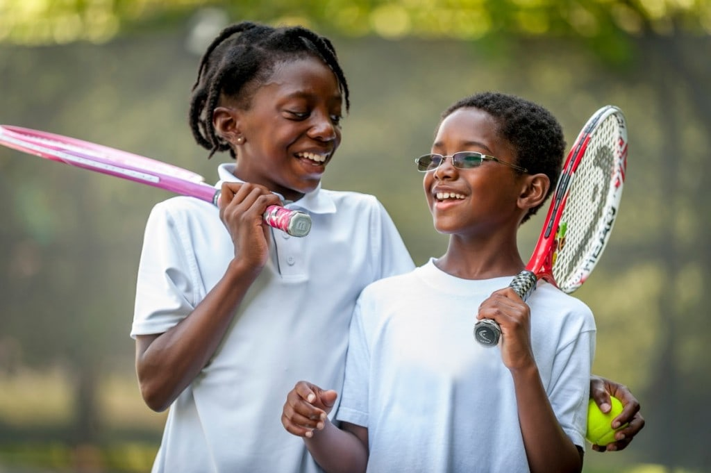

Play It Forward Foundation Secures Major Sponsorship to Support Youth Sports Development
Durban, South Africa
August 18, 2024
The Play It Forward Foundation is thrilled to announce a new partnership with a leading sports equipment manufacturer, Sport Gear SA. This sponsorship deal will provide essential resources to support the foundation's mission of empowering young athletes across South Africa, particularly those from disadvantaged backgrounds.
The sponsorship includes a generous donation of high-quality sports equipment, such as rugby balls, soccer kits, and training gear. These resources will be distributed to schools and communities in need, ensuring that all children, regardless of their socio-economic status, have the opportunity to participate in sports and develop their skills.
Nathi Ntuli, the founder of Play It Forward and a passionate rugby player at Varsity College, expressed his excitement about the partnership: "This sponsorship is a game-changer for us. It allows us to reach more kids and provide them with the tools they need to excel in sports. We believe that every child deserves a chance to pursue their dreams, and this partnership brings us one step closer to making that a reality."
The foundation plans to launch a series of sports clinics and workshops in the coming months, utilizing the donated equipment to train and mentor young athletes. These events will be open to both abled and disabled children, reflecting Play It Forward’s commitment to inclusivity and equal opportunity in sports.
